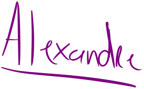

La technologie nous offre l'opportunité de transformer un océan d'informations en une rivière de connaissances
A propos de moi
Bonjour, je suis Alexandre, titulaire d'un Master 2 en Statistiques, Recherche et Expertise (Ingénierie scientifique du Muséum national d'Histoire naturelle de Paris).
Scientifique authentique, à l'écoute et bienveillant, je valorise le travail d'équipe et la collaboration, d'autant plus motivé par la résolution des problèmes qui a un impact positif sur la société !
Je réalise des projets data depuis plus de sept ans maintenant. Ayant été challengé avec des données de tout type (tabulaires, médias, textuelles, géospatiales, etc.), mon expérience me permet d'appréhender un large spectre de problématiques métiers, que cela soit par l'usage de langages comme R et Python, mais aussi via des outils de restitution comme Google Looker, Tableau et Power BI.
Vous souhaitez en savoir plus ? Contactez-moi !
Maitrises

Analytique et algorithmique
Initialement dans une réflexion basée sur l'algorithmique, j'utilise pour le moment Python, R et SQL pour couvrir mes solutions d'analyse et de modélisation. Mon expertise couvre un large éventail de compétences : de la préparation des données (ETL) à la création de modèles prédictifs (ML/DL) en passant par les analyses statistiques et le software engineering.

Intelligence artificielle
Expérimenté en intelligence artificielle, j’utilise des techniques pertinentes de Machine Learning et de Deep Learning pour résoudre des problématiques métiers. Mon expertise s’étend de la vision par ordinateur (Computer Vision) au traitement du langage naturel (NLP) ainsi qu'à l’analyse de séries temporelles, mais aussi à la création de modèles prédictifs plus classiques (Clustering, Régression, etc).

Visualisation et inclusivité
"La clarté est la politesse du Data Scientist". J'entends par là que j'accorde une importance personnelle à la présentation de mes résultats et KPI. Que cela soit via un tableau de bord ou un rapport statistique, je veille à utiliser les visualisations les plus adaptées, avec un choix de couleurs et de polices permettant aussi aux daltoniens et dyslexiques d'avoir une lecture simple et une compréhension rapide de mon travail.
Communication et partage
Bien que naturellement réfléchi et introspectif, j’accorde une grande importance à la communication et au partage des connaissances. Je m’efforce d’adapter mon discours à mes interlocuteurs, de transmettre mes idées avec clarté et de favoriser l’adhésion. Toujours à l’écoute, j'accueille les critiques constructives pour m'améliorer et alimenter les sujets de réflexion les plus complexes.
Projets récents
Réalisation d'une analyse hiérarchique des tendances populationnelles d'une espèce de chauve-souris en France sur la période 1995-2024 (30 ans de suivi). Modélisations TRIM pour la baseline, GLMM pour intégrer les premiers effets d'interaction et enfin, modélisations globales à l'aide de modèles bayésiens hiérarchiques, afin de prendre en compte la structure imbriquée des données.
Utilisation de données spatiale LiDAR (TLS) pour modéliser un espace naturel, permettant une meilleure compréhension de la morphologie locale en facilitant l'identification des microhabitats et des structures paysagères, pour un site ayant des conditions difficiles d'accès.
Analyses démographique et spatiale des populations de cinq espèces de chauves-souris cavernicoles marquées depuis 2018 dans le cadre d'un projet Capture-Marquage-Recapture d'envergure (> 3M de données). Modèle CMR, taux de recapture, calcul des trajectoires spatio-temporelles et réalisation d'un tableau de bord interactif pour visualiser les résultats.
 Voir plus →
Voir plus →
Analyses multivariées à partir de données d'inventaire et de caractérisation des habitats et des mesures de gestion. Après une analyse complète des facteurs environnementaux et des pratiques de gestion, des modèles de régression logistique ont été appliqués pour identifier les déterminants clés de la présence de l'Agrion de Mercure.
Analyses multivariées à partir de données d'activité biologique et environnementales afin de modéliser les seuils de bridage éolien optimaux, dans l'objectif de limiter les risques de collisions. Usage de régressions logistiques et représentation de la distribution de l'activité en fonction des variables abiotiques.
Ensemble d'outils standardisés afin d'améliorer l'analyse des données chiroptérologiques. Les fonctions permettent de calculer des indicateurs d'activités comparables entre les sites d'études. Une application Shiny déployée en ligne permet aux utilisateurs d'importer leurs données, visualiser et exporter les résultats de manière ergonomique, même sans connaissances du langage R.
Outil automatisable de collecte et synthèse d'informations à partir de flux RSS. Le programme extrait les nouveaux articles de sites webs cibles, les synthétise et réalise un rapport de veille simple, envoyé par mail ou stocké directement sur serveur privé.
Entrainement d'un modèle de classification d’images thoraciques par Deep Learning et Computer Vision (CNN) à partir d'un jeu d'un important jeu de données open-source et réalisation d'une application en ligne pour faciliter l'usage du modèle via importation d'images. L'application permet par ailleurs d'afficher les GRAD-CAM, permettant d'appréhender la pertinence des zones détectées.
 Voir plus →
Voir plus →
Interface simple d'une application de recherche sémantique dans des documents PDF, utilisant un pipeline RAG pour l'indexation et la citation de sources. Un modèle de langage open-source est utilisé pour comprendre les requêtes, extraire les informations pertinentes des documents et échanger avec l'utilisateur grâce au langage naturel.
Vous souhaiteriez en savoir un peu plus ? N'hésitez pas à télécharger mon CV pour garder mes coordonnées sous la main et me contacter !